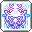
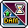
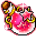
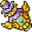
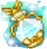
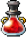

토정 풀도핑 가이드
직업 스킬
- 익스클루시브: 공/마 +4%
- 얻는 법: 블로그 링크
5차 스킬 매트릭스
- 일격필살: 30초마다 공격 시 2초 지속 데미지 100% 증가
- 구하는 곳: 5차 스킬 매트릭스 룬
물약
좋은 비약과 물약 두 개 도핑을 위한 선행 작업:
ESC → 캐릭터 → 전문기술 → 마이스터 빌 → ‘힘멜’: [전문 기술] 전문기술 배우기 → ‘스타첼’: 약초 채집을 배운다 → ‘카리엔’: 연금술을 배운다
- 반짝이는 빨간 별 물약: 보스 데미지 +20%
- 고급 관통의 비약: 방어력 무시 +20%
- 향상된 10단계 힘의 물약: 30분간 힘이 30 증가
- 세이람의 물약: 크확 +20% / 크뎀 +16% / 공마 +10% / 공마 +50 / 보공 +15%
- 알레리아의 물약: HP 0 → 피 회복 후 생존
- 몬스터파크 물약 [레드]: 공격력 +30
추가 + 도핑
 길드 노블 스킬: 보공 +30% / 방무 +30% / 데미지 +30% / 크뎀 +30%
길드 노블 스킬: 보공 +30% / 방무 +30% / 데미지 +30% / 크뎀 +30% 장비 제작 명장 스킬: 크뎀 +5%
장비 제작 명장 스킬: 크뎀 +5% 유니온의 힘: 공마 +30
유니온의 힘: 공마 +30